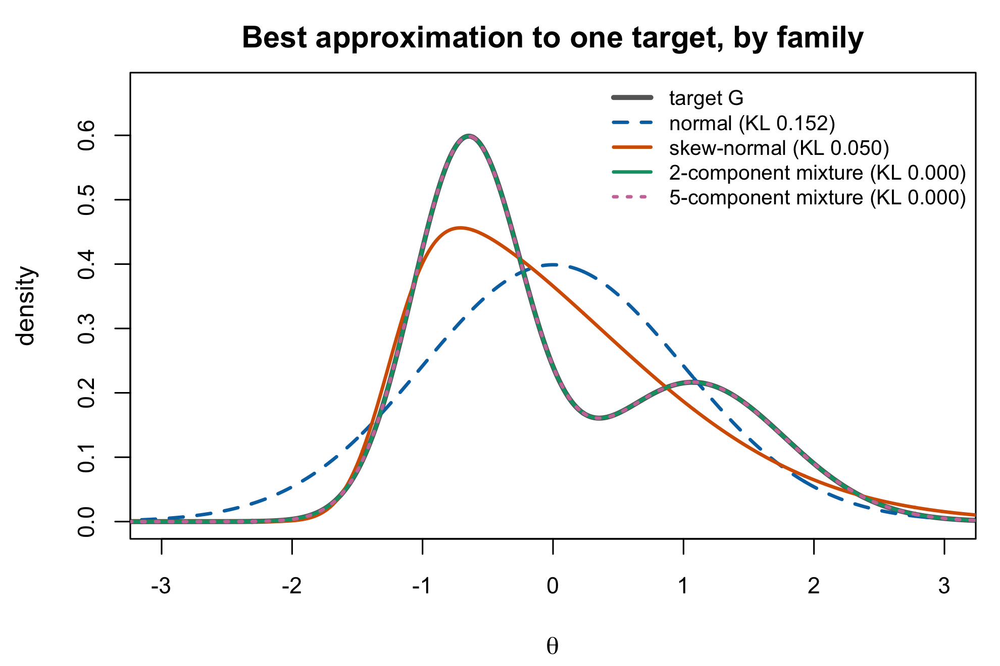
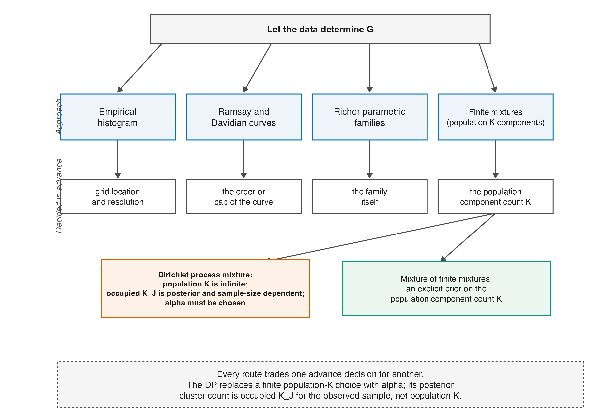

| Family | Can represent | Must be fixed in advance | Small samples | Posterior over G |
|---|---|---|---|---|
| Normal (baseline) | nothing beyond location and scale | — | most stable | no (MML) |
| Empirical histogram | any shape on the quadrature grid | quadrature points | numerically least stable of the flexible options | no (MML) |
| Spline density | smooth densities, any modality | knots and degree | needs larger calibration samples | no (MML) |
| Ramsay curve | smooth densities, any modality | degree and knots (chosen by model selection) | needs larger calibration samples | no (MML) |
| Davidian curve | smooth densities, any modality | degree of the polynomial | needs larger calibration samples | no under MML; yes in the MCMC form |
| Skew-normal / parametric | skew (and tails, family-dependent); not multimodality | the parametric family | few parameters, so relatively stable | depends on fitting method |
| Finite normal mixture | skew, multimodality, heavy tails | the number of components, or a prior on it under an MFM | overfitting, weak occupancy, and label switching | yes if fitted by MCMC |
| Nonparametric deconvolution | any density, subject to smoothness | smoothness / regularization | slow nonparametric rates | no (point estimate with standard errors) |
| Dirichlet process mixture | skew, multimodality, heavy tails | concentration and base measure; the occupied partition count is induced | partition and density can remain prior-sensitive | yes |
14 Flexible Parametric and Semiparametric Alternatives
“Let \(G\) be flexible” is not a new idea, and the Dirichlet process is not the first answer to it. This chapter is the genealogy, and it exists for a specific reason: a reader deciding whether the semiparametric approach of Chapter 16 is worth the trouble needs to see what it buys relative to the alternatives, and that comparison is not possible without knowing what the alternatives are.
The organizing question for the whole chapter is a single one. What must the analyst decide in advance? Every family below can represent more shapes than a normal can, and they differ mostly in what they demand to be told before they will do it.
14.1 Estimating \(G\) instead of assuming it
The first move is the oldest. Mislevy (1984) gives maximum likelihood equations for the population parameters of \(g(\theta \mid \alpha)\) estimated “directly from the observed responses; i.e., without estimating an ability parameter for each subject,” together with asymptotic standard errors and tests of fit. This is the marginal machinery of Section 5.3 turned on \(G\) itself rather than only on \(\boldsymbol\beta\), and it is the point at which \(G\) becomes an object of estimation.
Its most-used form is the empirical histogram: \(G\) is left free at the quadrature points and estimated as a discrete distribution over them. It can represent any shape the grid can resolve and it needs no functional form at all. What it costs is stability — Li and Cai (2018) report from their own experience that the empirical histogram “is often less stable numerically than the standard normal prior,” which is a mild way of saying that a free parameter at every quadrature point is a great many parameters.
14.2 Smoothing: splines, Ramsay curves, Davidian curves
The next generation replaces “free at every grid point” with “smooth, with a controlled number of degrees of freedom.”
Woods and Thissen (2006) estimate the latent density with splines, simultaneously with the item parameters, and report that when the latent distribution is poorly approximated as normal the 2PL item parameter estimates improve. Ramsay-curve IRT (Woods 2006) does the same with Ramsay’s density family, and Woods extends it to Likert-type data (2007) and to the 3PL (2008). Woods and Lin (2009) introduce Davidian-curve IRT, in which the latent density is a Davidian curve fitted simultaneously with logistic item response functions, and compare it directly against Ramsay curves and the empirical histogram under normal, bimodal and skewed generating distributions.
Two features of this generation matter for the comparison.
The first is that they are maximum-likelihood procedures, so they produce a point estimate of \(G\) and not a posterior over it. That is not a defect; it is a different object, and Section 14.6 says when the difference bites. Monroe and Cai (2014) point out a concrete consequence: the original EM implementation of RC-IRT “does not produce the parameter covariance matrix as an automatic byproduct on convergence,” which limits the inference procedures available, and their paper exists to supply it.
The second is that each of them has a tuning decision. Splines need knots and a degree; Ramsay curves need a degree and knot count chosen by model selection — Woods (2006) treats model selection as part of the method and evaluates new approaches to it; Davidian curves need a polynomial degree. The flexibility is real and it is purchased with a choice the data must also be used to make.
14.3 Parametric families with more shapes
A cheaper option is to keep a parametric family and pick a bigger one. Skew-normal and related families add a shape parameter and buy asymmetry for one extra degree of freedom.
The limitation is structural rather than practical, and Figure 14.1 shows it: a skew-normal can bend but it cannot produce a second mode, at any parameter value. If the substantive reason to expect non-normality is a mixed population (Section 13.3), a skew family is the wrong tool no matter how well it is fitted.

14.4 Finite mixtures, and the question the analyst must answer
Mixtures of normals can represent skewness, multimodality and heavy tails together, which is why they recur.
Bolt et al. (2001) use a mixture item response model to capture discrete latent classes with different propensities toward response categories — a mixture over people, motivated substantively. Gnaldi et al. (2016) extend this to a multilevel finite mixture that clusters both students and schools into ability classes. Bambirra Gonçalves et al. (2018) take the more direct route of putting a normal mixture on the ability distribution itself in a Bayesian 3PL, “allowing for features like skewness, multimodality and heavy tails.” Cheng and Meng (2025) revisit Gaussian-mixture IRT and note that it doubles as a tool for exploring latent heterogeneity, their contribution being a stochastic-approximation EM algorithm to make the computation tractable.
The family is expressive enough for anything this book needs. The unresolved question is how many components to use, and it is not a technicality:
- Too few impose model-dependent distortion: a fitted \(G\) may be too smooth, too narrow, too wide, or miss a mode. Posterior-mean ensemble under-dispersion in Proposition 11.1 does not determine that direction.
- Too many create an overfitted representation at finite \(N\): weakly occupied or duplicate components and label switching complicate component-specific summaries. This does not refute identification of a minimal finite-mixture order under standard conditions.
- Selecting the number by an information criterion makes the reported uncertainty conditional on a selection step whose own uncertainty is then discarded.
Figure 14.1 makes the shape of this problem visible while also demonstrating why the figure cannot resolve it: the two-component fit is exact because the target was a two-component mixture, and an overfitted five-component parameterization can reproduce the same density through redundant components. Under standard regularity conditions a minimal finite normal-mixture representation and its order are identifiable; duplicate or zero-weight components are nonminimal representations, not a counterexample.
One response is the Dirichlet process mixture of Chapter 15: the analyst specifies a concentration parameter governing how readily new occupied clusters appear, and obtains a posterior over the sample partition count. That quantity is not a population component order. A different response is a mixture-of-finite-mixtures prior, which places a prior and posterior directly on a finite population component count (Miller and Harrison 2018). The two models answer different complexity questions; neither removes the need to state the prior.
14.5 Fully nonparametric density estimation
The most permissive option treats the problem as one of inverse estimation. Kappus et al. (2020) consider the mixed-effect Rasch model with persons drawn from a large population and estimate the ability density under nonparametric constraints, posing it explicitly as a statistical linear inverse problem. This is the same structure as the deconvolution of Section 12.4: the observable is the latent variable convolved with response noise, and recovering the latent density means deconvolving.
Framing it this way is clarifying because it names the difficulty precisely. Inverse problems are ill-posed; the rates are slow; regularization is not optional, and the choice of regularization is the analogue of choosing knots or components. Nothing here escapes the central trade — it relocates it.
14.6 Bayesian versions, and what a posterior over \(G\) buys
Zhang et al. (2021) give an MCMC method for ordinal items with flexible latent trait distributions, using a Davidian curve to approximate \(G\) within a Bayesian sampler — the same density family as Woods and Lin, fitted so as to produce a posterior rather than a maximum. Bambirra Gonçalves et al. (2018) do the corresponding thing for mixtures.
The distinction these papers turn on is the last column of Table 14.1 and it deserves stating plainly. A maximum-likelihood flexible-\(G\) method answers “what is the best estimate of \(G\)?” A Bayesian one answers “what is the posterior distribution of \(G\)?” — and therefore, for any functional of \(G\), supplies an interval without further argument. Since Part VI is about functionals of \(G\) — quantiles, the proportion beyond a cut-score, the whole EDF, ranks — this is not a stylistic difference. It determines whether the quantities the book cares about come with uncertainty attached.
Finch and Edwards (2016) are the useful counterweight. They review Rasch parameter estimation under non-normal latent traits, note that methods such as RC-IRT have been shown to reduce bias, and evaluate how well they actually do. The literature does not claim that flexibility is free, and neither does this book.
14.7 The comparison
Reading Table 14.1 down the third column rather than the second is the point of the chapter. Representational capacity separates the normal and the skew-normal from everything else, and then stops discriminating: splines, Ramsay curves, Davidian curves, mixtures, nonparametric deconvolution and Dirichlet process mixtures can all represent skewness and multimodality. What separates them is the advance decision — knots, degree, component count, bandwidth — and whether the method can express uncertainty about it. Figure 14.2 draws that organization as a picture.

How much the choice within the flexible family matters is now partly measured. On the 504 real datasets of the Warehouse shape study, an empirical-histogram estimate and its smoothed variant agree about whether a dataset sits beyond the .10 departure landmark for 87.9 percent of units; the empirical histogram against a capped Davidian curve agrees for 75.8 percent, with the Davidian family pulling departures toward normality in a recovery check on generated data (Lee 2026). The reading this book takes is the modest one: flexible estimators agree with one another far more than any of them agrees with the normal assumption, and the residual disagreement follows the regularization exactly as the third column predicts.
That is the position the Dirichlet process occupies, and stating it this way is deliberately deflationary. It is not the only family that can represent a bimodal \(G\), yield a posterior over \(G\), or express uncertainty about complexity; Bayesian finite mixtures and mixtures-of-finite-mixtures can do so as well. Its distinctive complexity object is the random occupied partition induced by the concentration and base measure, not a posterior on a true finite component count. Whether that is worth its cost is an empirical question, and it is the companion book’s.
14.8 Sources and provenance
Every family in Table 14.1 is characterized from the cited work’s own stated aims and method. This chapter is a genealogy, and the reading is at the level of abstracts, introductions and stated results rather than derivations; where a claim needed more than that, it is not made. Specifically:
Mislevy (1984) for direct estimation of population parameters from responses with standard errors and fit tests; Woods and Thissen (2006) for splines and the 2PL improvement; Woods (2006, 2007, 2008) for Ramsay curves, including model selection as part of the method; Woods and Lin (2009) for Davidian curves and the three-way comparison against Ramsay curves and the empirical histogram; Monroe and Cai (2014) for the missing covariance matrix under EM; Bolt et al. (2001) and Gnaldi et al. (2016) for mixtures over people; Bambirra Gonçalves et al. (2018) and Cheng and Meng (2025) for mixtures on the ability distribution; Kappus et al. (2020) for the inverse-problem framing; Zhang et al. (2021) for the Bayesian Davidian sampler; Finch and Edwards (2016) for the corrective evaluation. Li and Cai (2018) supply the remark on empirical-histogram stability, from their § 1.
Figure 14.1 is computed for this chapter and is a statement about representational capacity only. Its two-component fit is exact because the target is a two-component mixture; that circularity is deliberate and is the figure’s point rather than a flaw in it. Nothing in the figure is evidence about estimation performance, which is where these families genuinely differ and which Table 14.1 reports from the cited sources instead.
The three-way separation in Section 14.7 — capacity, advance decision, posterior — is this book’s organization of the literature and not a claim any of these authors makes; Figure 14.2 draws that organization and carries no analysis output. The estimator-agreement percentages quoted under it are the Warehouse shape study’s (2026), read from its manuscript’s sensitivity analyses as described in Chapter 28.
Bambirra Gonçalves, Flávio, Bárbara da Costa Campos Dias, and Tufi Machado Soares. 2018. “Bayesian Item Response Model: A Generalized Approach for the Abilities’ Distribution Using Mixtures.” Journal of Statistical Computation and Simulation 88 (5): 967–81. https://doi.org/10.1080/00949655.2017.1413650.
Bolt, Daniel M., Allan S. Cohen, and James A. Wollack. 2001. “A Mixture Item Response Model for Multiple-Choice Data.” Journal of Educational and Behavioral Statistics 26 (4): 381–409. https://doi.org/10.3102/10769986026004381.
Cheng, Siyao, and Xiangbin Meng. 2025. “Estimating IRT Models Under Gaussian Mixture Modeling of Latent Traits: An Application of MSAEM Algorithm.” Multivariate Behavioral Research 0 (0): 1–18. https://doi.org/10.1080/00273171.2025.2512345.
Finch, Holmes, and Julianne M. Edwards. 2016. “Rasch Model Parameter Estimation in the Presence of a Nonnormal Latent Trait Using a Nonparametric Bayesian Approach.” Educational and Psychological Measurement 76 (4): 662–84. https://doi.org/10.1177/0013164415608418.
Gnaldi, Michela, Silvia Bacci, and Francesco Bartolucci. 2016. “A Multilevel Finite Mixture Item Response Model to Cluster Examinees and Schools.” Advances in Data Analysis and Classification 10 (1): 53–70. https://doi.org/10.1007/s11634-014-0196-0.
Kappus, Johanna, Friedrich Liese, and Alexander Meister. 2020. “Nonparametric Estimation of the Ability Density in the Mixed-Effect Rasch Model.” Electronic Journal of Statistics 14 (2). https://doi.org/10.1214/20-EJS1736.
Lee, JoonHo. 2026. How Common Are Estimated Latent-Distribution Departures from Normality? Evidence from 504 Item-Response Data Sets. arXiv; arXiv. https://doi.org/10.48550/arXiv.2608.06817.
Li, Zhen, and Li Cai. 2018. “Summed Score Likelihood–Based Indices for Testing Latent Variable Distribution Fit in Item Response Theory.” Educational and Psychological Measurement 78 (5): 857–86. https://doi.org/10.1177/0013164417717024.
Miller, Jeffrey W., and Matthew T. Harrison. 2018. “Mixture Models with a Prior on the Number of Components.” Journal of the American Statistical Association 113 (521): 340–56. https://doi.org/10.1080/01621459.2016.1255636.
Mislevy, Robert J. 1984. “Estimating Latent Distributions.” Psychometrika 49 (3): 359–81. https://doi.org/10.1007/BF02306026.
Monroe, Scott, and Li Cai. 2014. “Estimation of a Ramsay-Curve Item Response Theory Model by the Metropolis–Hastings Robbins–Monro Algorithm.” Educational and Psychological Measurement 74 (2): 343–69. https://doi.org/10.1177/0013164413499344.
Woods, Carol M. 2006. “Ramsay-Curve Item Response Theory (RC-IRT) to Detect and Correct for Nonnormal Latent Variables.” Psychological Methods 11 (3): 253–70. https://doi.org/10.1037/1082-989X.11.3.253.
Woods, Carol M. 2007. “Ramsay Curve IRT for Likert-Type Data.” Applied Psychological Measurement 31 (3): 195–212. https://doi.org/10.1177/0146621606291567.
Woods, Carol M. 2008. “Ramsay-Curve Item Response Theory for the Three-Parameter Logistic Item Response Model.” Applied Psychological Measurement 32 (6): 447–65. https://doi.org/10.1177/0146621607308014.
Woods, Carol M., and Nan Lin. 2009. “Item Response Theory with Estimation of the Latent Density Using Davidian Curves.” Applied Psychological Measurement 33 (2): 102–17. https://doi.org/10.1177/0146621608319512.
Woods, Carol M., and David Thissen. 2006. “Item Response Theory with Estimation of the Latent Population Distribution Using Spline-Based Densities.” Psychometrika 71 (2): 281–301. https://doi.org/10.1007/s11336-004-1175-8.
Zhang, Xue, Chun Wang, David J. Weiss, and Jian Tao. 2021. “Bayesian Inference for IRT Models with Non-Normal Latent Trait Distributions.” Multivariate Behavioral Research 56 (5): 703–23. https://doi.org/10.1080/00273171.2020.1776096.